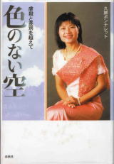

－久郷ポンナレット－
－久郷ポンナレット－

| | TOP | | 現在までの活動 | | 慰霊墓参り | | 計画 | | よくある質問と回答 | | 反響 | | 運営者 | | 収支表 | | カンボジアの歴史 | |
| ■よく聞かれる質問と回答 (最終更新日：2004/9/29) |
| Q：
誰が運営しているのですか？ A： 私、久郷ポンナレットです。NPOやNGOではなく、個人的に行っています。 まだ10代前半の頃、ポル・ポトの強制労働から運良く生き延び、難民として日本へ参りました。 過去には辛いことも多々ありましたが、現在は元気な子供が2人いて、夫もまじめで、とても幸せです。 難民として来日後、過去の体験を記した「色のない空」(春秋社)を発行しております。 色のない空基金の名前は、本の題名から付けました。  本の抜粋はこちら |
| ●
カンボジアにとって、この基金の持つ意味は？ A： 未来に進むためには、過去と向きあうことが必要な時もあります。 多くの遺骨は調査されず、そのままの状態で放置されています。 一部には観光客向けの「展示」という形で整理されていますが、これは供養ではありません。 遺骨を放置されたままという状態は、生存者にとってはまだポル・ポトの時代が終わっていないのと同じです。 納骨が出来て初めて、気持ちが楽になります。 自分の過去と向き合えます。 たとえどの骨が自分の親族か分からなくても、どの地域で殺されたかは分かります。 自分の両親も含め、苦楽を友にした知人友人を一緒にお寺に納めた時、初めて「生き残った者」として心が納得できると思うのです。 死んだ人を唯一「覚えている者」として。 私自身、ずっと過去を背負ったまま、今まで生きてきたような気が致します。 |
| ●
カンボジアは、地雷、ストリートチルドレン、売春、エイズ、環境問題など、 現在早急に取り組みが必要な問題が多い国なのに、なぜ過去の問題に取り組むのですか？ A： ご指摘の通り、カンボジアでは現在、多種多様なジャンルにわたって多くの団体が支援しています。 どの問題もカンボジアの未来のため、早急な取り組みを必要とする問題ばかりです。 もし貴方が「カンボジアの環境や教育問題に対して支援したい」という場合、その関係の団体に支援してください。 ただ、この「色のない空募金」は、他の支援団体から予算を振り分けられて活動するわけではありません。 ゼロからのプラスであり、他の支援団体に迷惑を掛けるものではないのです。 現在の問題と過去の問題、どちらが優先か、とても難しいと思います。 問題解決に向けて同時にプロジェクトを進行してもいいと思うのです。 私達が始めなければ、「誰も行わない」支援です。 数ある支援の中で、一つくらいカンボジアンの「心」を支援する基金があっても、良いのではないでしょうか。 「色のない空基金」は、この「心」の支援に賛同して頂ける方々にご協力頂きたいと考えています。 |
| ● なぜプノンペンに作るのですか？ 他の土地の方が安いのでは？ A： 犠牲になった人の多くは、ある日突然 手荷物だけで農村に送られたプノンペン住民です。 クメールルージュの強制労働は、プノンペンの人を、地方の農村に強制移住させて行われました。 そこでは地元の人（旧住民）とプノンペンから来た人（新住民）は、明確に分けられ、差別されていました。 そのような環境で、彼らは最後まで、プノンペンに家族と帰ることを願っていました。 今彼らが眠っている地方の農村は、強制労働させられ、虐殺された場所であって、故郷ではありません。 強制労働させられ虐殺された場所ではなく、プノンペンへ連れ帰りたいと思います。 |

TOPへ戻る |